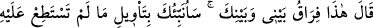
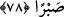

görülmemiştir.
78. (Hızır) şöyle dedi: “İşte bu, benimle senin aramızın ayrılmasıdır. Şimdi sana,
sabredemediğin şeylerin içyüzünü haber vereceğim.”
Hızır (a.s): “şöyle dedi: “İşte bu, benimle senin aramızın ayrılmasıdır.” Yâni, bu
zaman ayrılma zamanımızdır, dedi. Bu üçüncü îtiraz, “Benimle arkadaşlık etme...”
vaadinin gereği olarak ayrılış sebebidir.
“Şimdi sana sabredemediğin şeylerin iç yüzünü (te’vîlini) haber vereceğim.”
Te’vîl, bir şeyi varacağı yere döndürmektir. Burada kastedilen, sonuç ve âkıbettir.
Çünkü bu, te’vil değil, haber verilen şeydir. O da, geminin zâlimin elinden kurtarılması,
ana-babanın çocuğunun şerrinden kurtarılıp daha iyi bir bedele nâil olmaları ve iki
yetimin hazineyi çıkarmalarıdır.
Rasûlullah (s.a.) şöyle buyurmuştur: “İsterdik ki Mûsâ (a.s.) sabretseydi de, bize
haberlerini anlatsaydı”[217] yâni Allah Teâlâ vahiyle bize bunu bildirseydi.
et-Te’vîlâtü’n-Necmiyye’de şöyle der: Şeyhin âdâbından biri de şudur: Mürid,
herhangi bir îtiraz ile mübtelâ olsa ya da ayrılmayı gerektiren bir fiili işlese, şeyh bir
veya iki defa onu affeder, müsâmaha ile karşılar ve hemen ondan ayrılmaz. Üçüncü kez
tekrarlarsa beraberliğe son verir. Çünkü artık ayrılma mâzeretini elde etmiştir. İşte o
zaman, Hızır (a.s.)’ın dediği gibi şöyle der: “İşte bu, benimle senin aramızın
ayrılmasıdır.”
Şeyhin âdabından birisi de şudur: Şeyhin müridle beraberliği, müridin isteği yahut
zorunlu bir durumla ayrılığa dönüşse, şeyh ayrılırken de ona nasîhatı terk etmemelidir.
O’na, îtirâzının mâhiyetini ve bilgisi yetmediği şeyin hikmetini haber vermelidir. Onda
inkâr kalmaması için sabredemediği şeylerin içyüzünü açıklamalıdır. Ta ki böyle bir
ayrılıştan sonra mürid inkârcı olmasın ve iflâh olmaz bir duruma düşmesin.
Fakir (Bursevî) der ki: Bazı büyüklerin “Üstadına “Niçin” diyerek îtiraz eden iflah
olmaz.” şeklindeki sözlerinden kastedilen de budur.
Bâyezid Bistâmî (k.s.), kendisine muhâlefet eden talebesi hakkında şöyle demiştir:
“Allah’ın nazarından düşeni bırakın...” Bundan sonra o, muhanneslerin arasında
görülmüş, hırsızlık yapmış ve bu sebeple eli kesilmiştir. İşte ahdi bozmanın cezası
budur. O kimse nerede, Ebû Süleyman Dârânî (k.s.)’un bey‘atında verdiği sözde tam
olarak duran şu mürîdi nerede?! O mürîde: “Kendini fırına at!” denildi, o da hiç
düşünmeden attı. Bunun üzerine ateş ona serinlik ve selâmet oldu. İşte bu vefânın bir
sonucudur.
Mesnevî’de der ki: